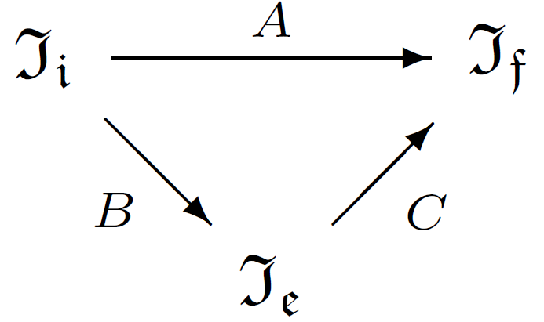

\[ A \in \mathfrak{m}^*: \mathfrak{I_i} \rightarrow \mathfrak{I_f}, \quad A \in \mathfrak{m}^*[I^u], A \in \mathfrak{m}^*[I^l] \]
В общем случае работать с пространством начальных и финальных информаций неудобно, поэтому в рамках алгебраического подхода решения задач классификации переходят в некоторое пространство, называемое пространство оценок. Его выбирают произвольно, так, чтобы было удобно. Для выполнения этого перехода в другое пространство алгоритм рассматривают как композицию алгоритмического оператора и решающего правила $A = C \circ B$, где $ B: \mathfrak{I_i} \rightarrow \mathfrak{I_e} $ — алгоритмический оператор, $ C: \mathfrak{I_e} \rightarrow \mathfrak{I_f} $ — решающее правило. Здесь $\mathfrak{I_e}$ — пространство оценок. В данном задании выберем $\mathfrak{I_e} = \mathbb{R}^l$.
В рамках данного задания $ B \in \mathfrak{m_0} $, где $ \mathfrak{m_0} = \mathfrak{m_{0_1}} \cup \mathfrak{m_{0_2}} $ — некоторое семейство операторов — объединение двух семейств, конкретный вид которых будет рассмотрен далее. А решающее правило зафиксируем как $ C = argmax $.
Представим теперь наш алгоритм не в виде $ A = C \circ B$, а в виде $ A = C \circ F \circ B $, где $F: \mathfrak{I_e} \rightarrow \mathfrak{I_e}$ — корректирующая операция.

Основная идея алгебраического подхода состоит в следующем. В общем случае выбранная нами модель операторов может не иметь оптимума, поэтому будем использовать алгебраическое расширение модели. Будем строить не один оператор, а несколько, и использовать их суперпозицию $A = C \circ F(B_1, \dots, B_p)$.

Корректирующие операции $ F \in \mathfrak{f} $, где $ \mathfrak{f} = \mathfrak{f_1} \cup \mathfrak{f_2} $ — семейство корректирующих операций, состоящее из двух подсемейств, где $ \mathfrak{f_i} = \{G: \mathfrak{I_e}^p \rightarrow \mathfrak{I_e} | p \in \mathbb{N} \}, i = 1, 2 $.
На самом деле корректирующая операция есть некоторое другое отображение \begin{equation} F: \{\mathfrak{I_i} \rightarrow \mathfrak{I_e}\}^p \rightarrow \{\mathfrak{I_i} \rightarrow \mathfrak{I_e} \} \end{equation} Но она индицируется операцией \begin{equation} G: \mathfrak{I_e}^p \rightarrow \mathfrak{I_e} \end{equation} если \begin{equation} F(B_1, \cdots, B_p)(S) = G(B_1(S), \cdots, B_p(S)) \end{equation}| Название параметра | Обозначение параметра | Область допустимых значений | Тип параметра по отношению к оптимизации |
|---|---|---|---|
| Набор эталонов | $\mathfrak{S}$ | $(S, r) \in (\mathfrak{J}_i, \mathfrak{J}_f)$ | Настраиваемый |
| Метрика | $\rho(S,S^i)$ | $\mathbb{R}_{+}$ | Фиксированный |
| Ядро | финитное | Фиксированный | |
| Ширина окна | $r$ | $(0, +\infty)$ | Настраиваемый |
| Название параметра | Обозначение параметра | Область допустимых значений | Тип параметра по отношению к оптимизации |
|---|---|---|---|
| Метрика | $\rho$ | $ \mathfrak{I_i}^2 \rightarrow \mathbb{R}_{+} $ | Константа |
| Метка «близость-дальность» | $ z_j $ | $ \{ +1, -1 \} $ | Константа |
| Эталон класса | $ S_{0_j} $ | $ \mathfrak{I_i} $ | Оптимизируемый |
| Радиус класса | $ R_{0_j} $ | $ \mathbb{R}_{+} $ | Константа |
| Название параметра | Обозначение параметра | Область допустимых значений | Тип параметра |
|---|---|---|---|
| Численно оптимизируемый |
| Название параметра | Обозначение параметра | Область допустимых значений | Тип параметра |
|---|---|---|---|
| Оптимизируемый | |||
| Оптимизируемый |